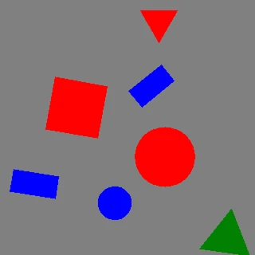

Synthetic shape datasets¶
fuse_augmentations.data draws colored shapes on a canvas and writes ready-to-train datasets. It is a standalone generation utility: no file-backed dataset loader, no model, no training loop. Use it for pipeline smoke tests, augmentation demos, teaching material, and quick detector sanity checks where a real dataset is overkill.
It supports two output formats — COCO and YOLO — across three tasks — detection, segmentation, and oriented bounding box (OBB).
Install¶
Rendering uses Pillow, which ships as a base dependency — nothing extra to install:
Quickstart¶
import tempfile
from fuse_augmentations import generate_dataset
with tempfile.TemporaryDirectory() as out_dir:
counts = generate_dataset(
out_dir,
num_images=100,
fmt="coco",
task="detection",
class_mode="shape",
seed=0,
)
print(counts)
Pass a real path instead of the temporary directory to keep the dataset. The same call with fmt="yolo" writes an Ultralytics-style layout; generate_dataset returns the number of images written per split.
Shapes, colors, and classes¶
Four shapes (square, rectangle, triangle, circle) in three colors (red, green, blue) are drawn on a gray canvas at random positions and sizes. class_mode selects how object classes are derived:
class_mode |
Classes |
|---|---|
shape |
square, rectangle, triangle, circle |
color |
red, green, blue |
shape_color |
Cartesian product, e.g. red_square (12 classes) |
rectangle (non-square) plus a random per-shape rotation give oriented boxes real orientation; a circle is rotation-invariant, so its OBB collapses to the axis-aligned box.
Tasks¶
Each task exposes a different annotation representation. In the looping previews below (yellow overlay), every generated image appears first bare, then with its exported annotation drawn back on. All three clips share the same seeded sample stream, so the shapes line up one-for-one — only the label type differs.
Axis-aligned boxes.

Filled-shape polygons.

Oriented boxes.
Regenerate these clips with python examples/animate_synthetic_dataset.py.
COCO output¶
Layout (Roboflow-style, one JSON per split):
_annotations.coco.json follows the standard COCO object-detection schema. Category ids are 1-based:
{
"info": { "description": "fuse-augmentations synthetic dataset" },
"licenses": [],
"categories": [
{ "id": 1, "name": "square", "supercategory": "none" },
{ "id": 2, "name": "rectangle", "supercategory": "none" }
],
"images": [
{ "id": 0, "file_name": "img_000000.jpg", "width": 640, "height": 640 }
],
"annotations": [
{
"id": 1,
"image_id": 0,
"category_id": 3,
"bbox": [x, y, w, h],
"area": 902.0,
"iscrowd": 0
}
]
}
Per task:
- detection —
bbox[x, y, w, h]andarea; nosegmentationkey. - segmentation — adds
"segmentation": [[x1, y1, x2, y2, …]], the filled-shape polygon. - obb — stores the four oriented-box corners as a 4-point
"segmentation": [[x1, y1, x2, y2, x3, y3, x4, y4]]alongside the axis-alignedbbox. COCO has no native oriented-box field, so the corner polygon is the OBB carrier.
All coordinates are in pixels and clamped to the image extent.
YOLO output¶
Layout (Ultralytics-style):
shapes_yolo/
images/{train,val,test}/img_000000.jpg
labels/{train,val,test}/img_000000.txt
data.yaml
data.yaml lists only the splits that were written:
path: .
train: images/train
val: images/val
test: images/test
nc: 4
names:
0: square
1: rectangle
2: triangle
3: circle
Each label file has one row per object. Class ids are 0-based; all coordinates are normalized to [0, 1] and clamped:
| Task | Row format |
|---|---|
detection |
cls cx cy w h |
segmentation |
cls x1 y1 x2 y2 … xn yn |
obb |
cls x1 y1 x2 y2 x3 y3 x4 y4 |
Example detection rows (labels/train/img_000000.txt):
In-memory streaming and training feed¶
Generation and writing are decoupled: SyntheticGenerator produces Sample objects, and writers persist them. Image pixels always stream: when you iterate SyntheticGenerator or drive a writer directly, only one Sample is materialized at a time, so you can feed a training loop with no disk round-trip and generation never holds more than one image in memory. This one-sample guarantee covers direct generator and writer iteration only — wrapping the source in a batching or multi-worker DataLoader (see below) is the exception. Label bookkeeping depends on the format: the YOLO writer emits one label file per image and the in-memory SyntheticIterableDataset retains nothing, so both stay memory-bounded regardless of num_images. The COCO writer emits a single JSON document per split, so it retains lightweight per-image and per-annotation metadata records (no pixels) in memory — O(n) in the split's image and annotation counts — until that split is written.
Iterate samples directly (no I/O):
# phmdoctest:skip
import numpy as np
from fuse_augmentations.data import SyntheticConfig, SyntheticGenerator
gen = SyntheticGenerator(SyntheticConfig(img_size=256))
for sample in gen.generate(1000, seed=0): # lazy: one Sample at a time
train_step(sample.image, sample.annotations)
Or plug straight into a PyTorch DataLoader via SyntheticIterableDataset (exported from data.datasets). Because object annotations are ragged (a variable number per image), pass a custom collate_fn; each batch is then a list[Sample]:
from torch.utils.data import DataLoader
from fuse_augmentations.data import SyntheticIterableDataset
ds = SyntheticIterableDataset(num_images=8, img_size=64, class_mode="shape", seed=0)
loader = DataLoader(ds, batch_size=4, collate_fn=list)
print(sum(len(batch) for batch in loader))
Set num_workers>0 for multi-process loading: SyntheticIterableDataset is worker-shard aware, so each worker generates a disjoint, deterministically-seeded slice of num_images. Note that a DataLoader relaxes the one-sample bound: a batch materializes up to batch_size samples at once, prefetching holds prefetch_factor batches per worker, and each of num_workers workers materializes its own sample concurrently — so in-memory peak scales with batch_size × num_workers, not with a single image. When writing to disk, generate_dataset streams the same single sample source through per-split views, so image pixels never accumulate; peak memory then depends on the writer — bounded for YOLO, and O(n) COCO metadata (per the note above) for COCO.
Reproducibility and tuning¶
Pass seed= for byte-identical output; all randomness flows through a single numpy.random.Generator. Tune content through generate_dataset(**config_kwargs) or a full SyntheticConfig:
import tempfile
from fuse_augmentations.data import SplitRatios, generate_dataset
with tempfile.TemporaryDirectory() as out_dir:
counts = generate_dataset(
out_dir,
num_images=200,
fmt="yolo",
task="obb",
split_ratios=SplitRatios(train=0.8, val=0.2, test=0.0),
img_size=64,
max_objects=15,
seed=42,
)
print(counts)
SyntheticConfig knobs: img_size, min_objects/max_objects, min_size_ratio/max_size_ratio, overlap_iou, boundary_tolerance, rotate, background, class_mode. Overlapping candidates (IoU above overlap_iou) and out-of-bounds candidates (more than boundary_tolerance outside the frame) are rejected during placement.
End-to-end example¶
examples/generate_synthetic_dataset.py writes every format × task combination and prints the per-split counts: